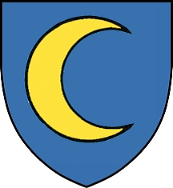

Landsdomare i södra Halland. Blev ca 67 år.
omkring 1500.
1567 Arlösa, Enslöv (N).
Biografi
Enligt andra antavlor för Knud Pedersson skulle Knud vara son till en Jens Henriksen till Risöe. Dock framgår det i dessa att det inte finns några samtida belägg för hans existens, utan att Jens och hans hustru första gången omnämns 1748, vilket gör att jag i väntan på mera samtida bevis väljer att inte ta med några föräldrar till Knud. Det påstås förvisso i det dokument där Knuts far omnämns att uppgifterna är hämtade ur någon slags släktbok för släkten Måneskiöld, men någon sådan finns inte bevarad. Dessutom brukade genealogiska arbeten från den tiden ofta vara påbättrade och har, i de fall de kunnat granskas närmare, ofta visat sig ha mycket lite med verkligheten att skaffa. För övrigt stärks inte trovärdigheten hos uppgifterna från år 1748 av att det även påstås att Henrik var av kunglig ätt, utan att man redovisar hur. Detta var ett vanligt sätt att få släkter att verka finare än de var. Det finns ett stort antal släkttavlor som redovisar kungligt blod, men, såvida det inte framgår av adelsbrevet, så redovisas det aldrig ofrälse härstamning. Vad det gäller Knud så tyder hans tillnamn Jude på att han kommer från Jylland. J A Nordström för vidare 1971 fram ett intressant tecken på att ätten var ofrälse. Knuts sonson Olof Pedersson använder namnet Olaus Krumme när han skriver in sig på Rostocks universitet, och han har ett vapen med initialerna O K. Vapenbilden är en måne, som även denna kan misstänkas vara övertagen från en annan släkt, för den släkt som innehar gården Fyllinge på 1400-talet har ett vapen med en måne på en sköld, och denna gård hör senare till Knuts svärmor Kristina Björnsdotter (Krumme). Att man på detta sätt tar både namn och vapen från mödernesläkten tyder på att fädernesläkten inte var så fin, utan snarare ofrälse
1532 omnämns ”Ion Swenske, Knut Iøde, her Holgers fogitt” (K Fr I reg, s 451). 1534-01-20 sigillerar Knut ett brev utfärdat av herr Holger Ulfstand. (Angående sigilleringen, se Thiset 1905, G II 1; angående brevets innehåll, se SD hk nr 39097). Det är alltså mycket möjligt att han vid denna tid var fogde hos just herr Holger. Belagd från 1534 till 1564 i Arlösa, Enslöv (N). 1536 fick han Arlösa i förläning och var 1549 landsdomare i Södra Halland. 1564 fick han order att göra infall i Sverige i spetsen för halländska bönder. (Olsson 1924)
Maaneach i ö ld var sannolikt ar dansk eller norsk härkomst. Han kom från Halland till Tjörn på 1560-talet och förde i vapnet en gyllene, åt höger vänd halvmåne i blått fält och på hjälmen tvenne väpnade armar som hålla tvenne fanor korsvis t vilka tvärdelata i färgerna blått och gult.
Knud Jenssen till Arlöse, kallad jude, vilket tyder på att han härstammade från Jylland, var landadomare i södra Halland 1549 , proviantmäatare i Halland 1563, beordrades 1564 att göra infall i Sverige i spetsen för en halländsk bondehär, Hade Dragsmarks kloster i förläning och var gift med Anna Pedersdotter Haar. Detta har upptecknats av Olaus Olsson 1924 tillsänt av Per-Arne Hedenstaf.
Gifte och barn
Anna Pedersdotter. Ansedel Född. [1]
Gift
Jens Knudsen Månesköld. Ansedel Född levde 1576. [2]
Peder Knudsen Månesköld. Ansedel Född 1529 i Enslöv (N). [1]
Död före 1607-10-30 i Olsnäs, Stenkyrka (O). [3]
Björn Knudsen Månesköld. Ansedel Död före 1596. [2]